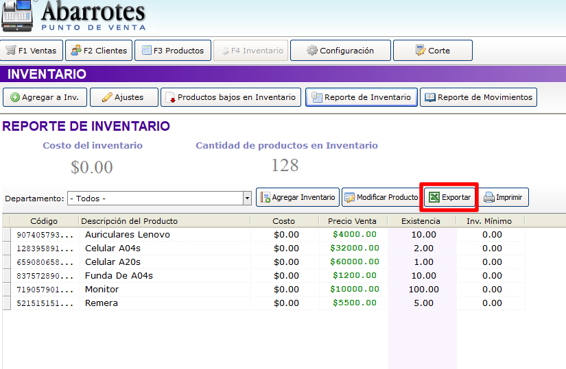
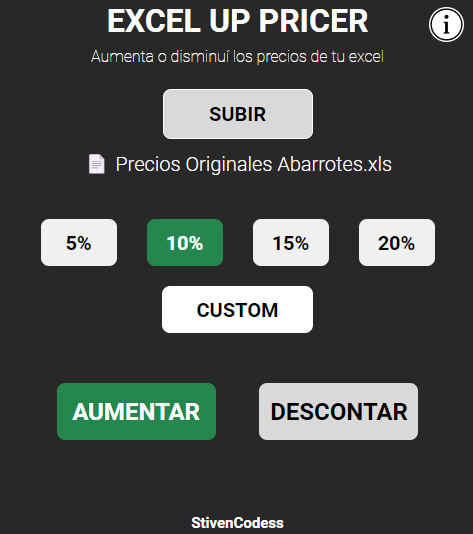
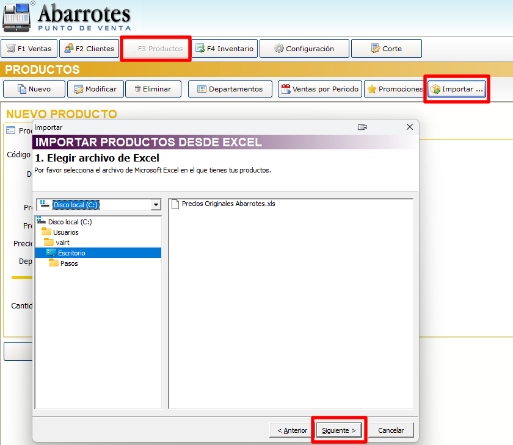
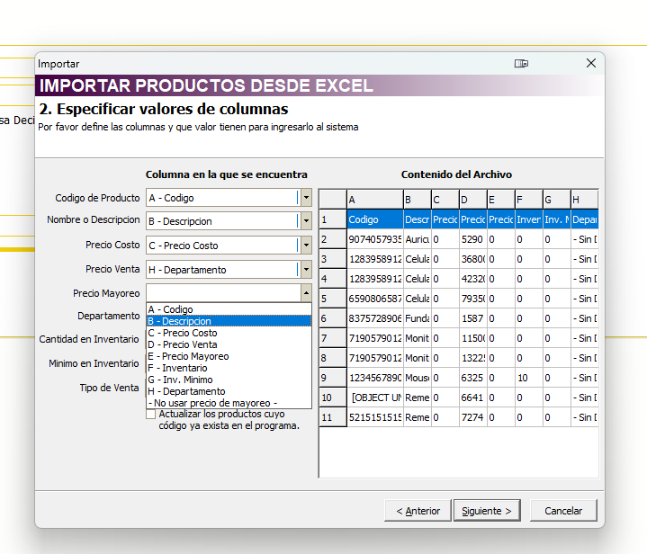

Excel Up Pricer
¿Qué es esta aplicación?
Excel Up Pricer es una aplicación diseñada para simplificar el proceso de aumentar los precios de abarrotes en la versión 2.12. Esta herramienta te permite importar fácilmente el archivo Excel proporcionado por abarrotes y realizar incrementos de precios de manera automática, solucionando problemas relacionados con códigos de barras y la compatibilidad de archivos XLSX.
¿Cómo funciona Excel Up Pricer?
Primero, abre el programa Abarrotes 2.12 y exporta el reporte de inventarios en Excel.
Luego, abre la aplicación Excel Up Pricer y carga el archivo exportado anteriormente. Después, selecciona el porcentaje de aumento (ya sea 20%, 10%, o 5%) y presiona el botón "Aumentar" o "Disminuir".
Guarda el archivo resultante y, a continuación, importa el inventario desde Abarrotes.
Finalmente, asegúrate de ubicar cada casilla en su lugar siguiendo las indicaciones proporcionadas por Abarrotes 2.2.
